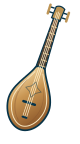
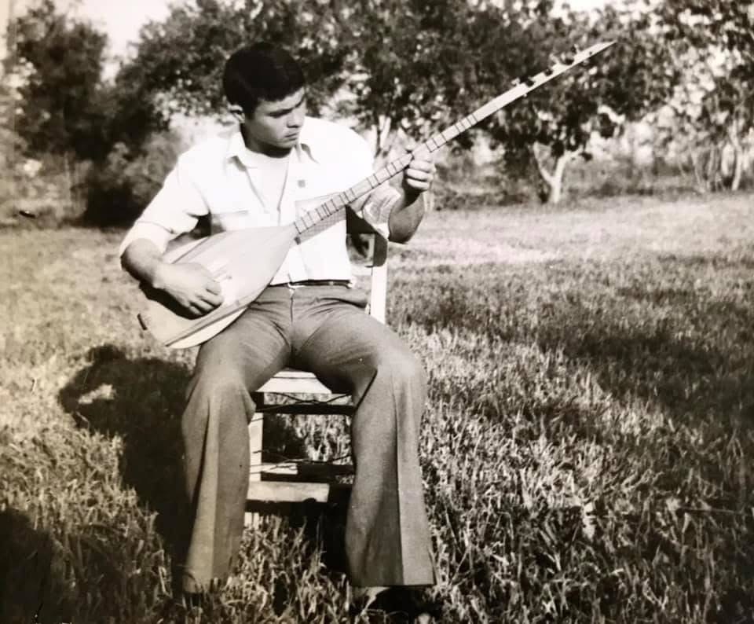
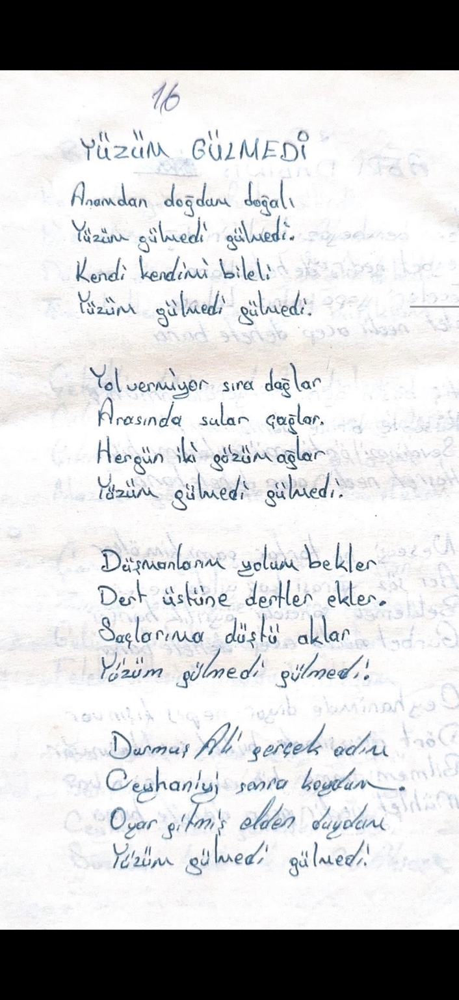

İçeriğe geç

Aşık Ceyhani
Durmuş Ali Sayıcı
Menü
Ana Sayfa
Hayatı
Videolar
Şiirleri
Dijital Kitaplık
Fotoğrafları
Kültürel Kimlik
← Ana sayfaya dön
04 / FOTOĞRAF ARŞİVİ
Fotoğrafları
Bir hayattan hatıralar.

Bağlamasıyla Durmuş Ali Sayıcı
Kapat ×
ŞİİR
Kapat ×
El yazısı aslı
